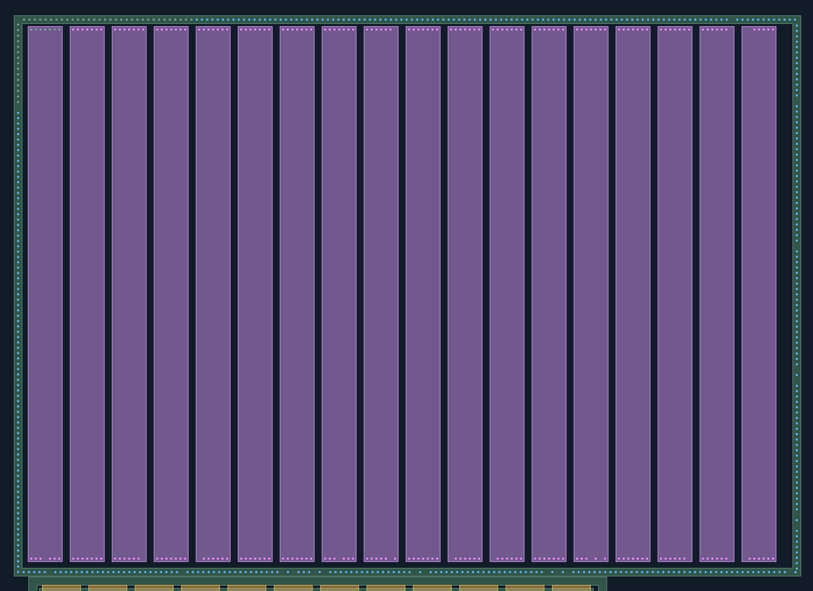
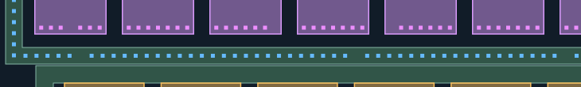

CT迁移：环与电阻端部扩展
最新人审：显示范围的连接关系基本通过；同阵列、同环CT的规则一致性仍需改进，逐孔几何未定稿。 完整反馈。图稿保留本次受评版本。
蓝色：新增AA接触；紫色：新增POLY接触；灰蓝：已审CT，保持不变、不重复验收。
新孔均有照片观察支持，采用局部材料对应，未使用全幅盲投影。AA/POLY材料未修改。
仅重建下列局部观察支持的孔列；未补齐缺少证据的位置，未画不代表没有孔。
新区域的材料对应仍为AI候选，孔数不是人工确认值。几何检查不是真实工艺DRC，M1归属未知。
整体质量门与防退化检查 ·
匹配与未选择观察记录
本次只复核6类新增范围：环上边RT、左边RL、右边RR、下边B1–B3，以及电阻上端T1–T3和下端B1–B3。电阻按从左到右01–18编号（目标G48-P01–P18），首条上端7孔为已审背景。空槽仅表示本次未获得足够观察，不能当成实际无孔。
逐孔列数量与待查槽位（0起编号）
- RING-TOP-EXT: 114 孔；待查槽位 [102]
- RING-LEFT-EXT: 87 孔；待查槽位 [0]
- RING-RIGHT: 96 孔；待查槽位 [14, 41, 64, 66, 91, 93]
- RING-BOTTOM: 135 孔；待查槽位 [5, 30, 49, 51, 55, 57, 74, 76, 99, 101, 103, 145]
- RES-02-TOP: 7 孔；待查槽位 []
- RES-03-TOP: 7 孔；待查槽位 []
- RES-04-TOP: 7 孔；待查槽位 []
- RES-05-TOP: 7 孔；待查槽位 []
- RES-06-TOP: 7 孔；待查槽位 []
- RES-07-TOP: 7 孔；待查槽位 []
- RES-08-TOP: 7 孔；待查槽位 []
- RES-09-TOP: 6 孔；待查槽位 [6]
- RES-10-TOP: 7 孔；待查槽位 []
- RES-11-TOP: 7 孔；待查槽位 []
- RES-12-TOP: 7 孔；待查槽位 []
- RES-13-TOP: 7 孔；待查槽位 []
- RES-14-TOP: 7 孔；待查槽位 []
- RES-15-TOP: 7 孔；待查槽位 []
- RES-16-TOP: 7 孔；待查槽位 []
- RES-17-TOP: 6 孔；待查槽位 [6]
- RES-18-TOP: 5 孔；待查槽位 [0, 1]
- RES-01-BOTTOM: 6 孔；待查槽位 [3]
- RES-02-BOTTOM: 7 孔；待查槽位 []
- RES-03-BOTTOM: 6 孔；待查槽位 [6]
- RES-04-BOTTOM: 7 孔；待查槽位 []
- RES-05-BOTTOM: 6 孔；待查槽位 [0]
- RES-06-BOTTOM: 7 孔；待查槽位 []
- RES-07-BOTTOM: 7 孔；待查槽位 []
- RES-08-BOTTOM: 6 孔；待查槽位 [3]
- RES-09-BOTTOM: 6 孔；待查槽位 [5]
- RES-10-BOTTOM: 7 孔；待查槽位 []
- RES-11-BOTTOM: 6 孔；待查槽位 [0]
- RES-12-BOTTOM: 6 孔；待查槽位 [0]
- RES-13-BOTTOM: 7 孔；待查槽位 []
- RES-14-BOTTOM: 5 孔；待查槽位 [3, 5]
- RES-15-BOTTOM: 7 孔；待查槽位 []
- RES-16-BOTTOM: 6 孔；待查槽位 [6]
- RES-17-BOTTOM: 6 孔；待查槽位 [6]
- RES-18-BOTTOM: 6 孔；待查槽位 [0]
OV 环与18条电阻总览
总览定位；请结合下方分段图核对。灰蓝为130个锁定CT，AA/POLY不改。
双击图像可在新页放大查看。

RT 环上边其余段
只补查原32孔之后的上横向环；下方电阻上端孔单独对应POLY。
双击图像可在新页放大查看。
RL 环左边其余段
15个已审左侧孔之后继续向下；边界处不重复生成孔。
双击图像可在新页放大查看。
RR 环右边
只重建围绕本电阻阵列的内侧环，不混入右边相邻环。
双击图像可在新页放大查看。
B1 下边环及电阻下端 1/3
区分最下方AA环孔列与上方POLY电阻端部孔列；不能互相替代。
双击图像可在新页放大查看。

B2 下边环及电阻下端 2/3
区分最下方AA环孔列与上方POLY电阻端部孔列；不能互相替代。
双击图像可在新页放大查看。
B3 下边环及电阻下端 3/3
区分最下方AA环孔列与上方POLY电阻端部孔列；不能互相替代。
双击图像可在新页放大查看。
T1 电阻上端 1/3
首条电阻上端7孔已审，其余候选逐条有原图峰；缺观察处保留未知。
双击图像可在新页放大查看。
T2 电阻上端 2/3
首条电阻上端7孔已审，其余候选逐条有原图峰；缺观察处保留未知。
双击图像可在新页放大查看。
T3 电阻上端 3/3
首条电阻上端7孔已审，其余候选逐条有原图峰；缺观察处保留未知。
双击图像可在新页放大查看。